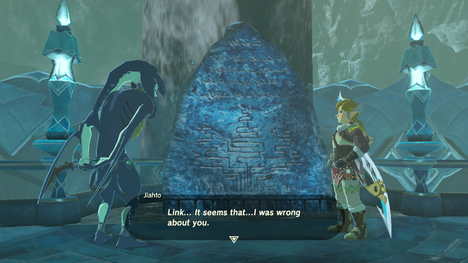
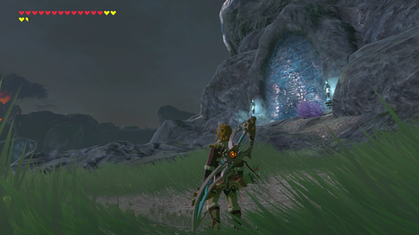
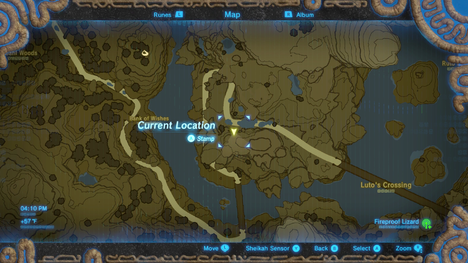
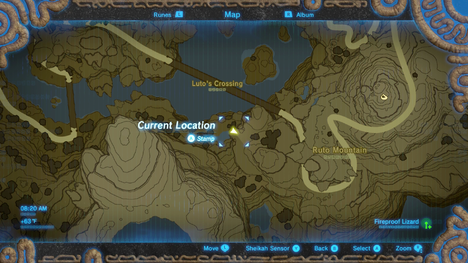
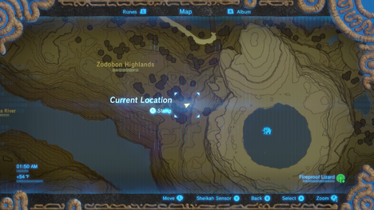
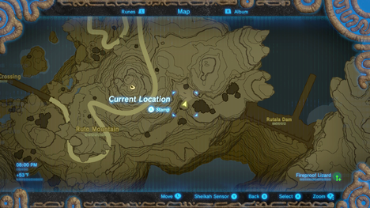
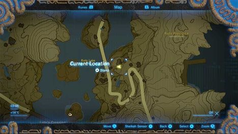
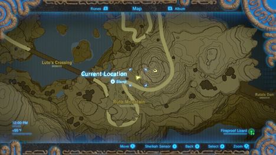
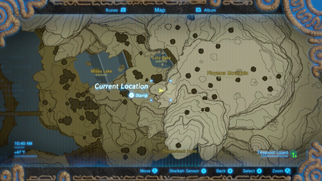

任务，佐拉石纪念碑，是塞尔达传说中的支线任务之一：荒野之息。 它可以在位于Lanayru地区的左拉之域开始。 您将收到钻石做为您的努力回报。
您必须首先完成主线任务Divine Beast Vah Ruta ，才能启动佐拉石纪念碑任务。 一旦你征服了地下城，你可以找到Zora Jiahto站在宝座前面的一块石头纪念碑前面。
{kind=link}
他会要求你找到10个石头纪念碑，隐藏在佐拉。 你可能已经看到其中的一些在你的旅途中，如果你与他们进行了互动，就已经被计入了任务。
这里有一个列表，您可以在哪里找到10个纪念碑，按时间顺序列出，一起他们讲述了佐拉的历史。
{kind=link}
晚上，您可以轻松识别它们，因为它们总是被两根蓝色的火炬点亮。 使用Vah Ruta作为起点,除了附录2。
佐拉石纪念碑第1部分

{kind=link}
快速前往瓦胡鲁特(Vah Ruta)，向北往悬崖的高处。 向纪念碑方向使用滑翔伞滑翔，你会有一点疑问。 在通向佐拉域的路上的邮编，所以你可能已经看过这个纪念碑。 这座纪念碑说的是左拉区域的产生。
佐拉石纪念碑第2部分

从Vah Ruta的悬崖看北西北，看到这座纪念碑就在桥上。
佐拉石纪念碑第3部分

这座纪念碑被水淹没，可以从大佐拉大桥很容易看到。
佐拉石纪念碑第4部分

{kind=link}
您可以从Vah Ruta所在的悬崖上，在Ruto山以西的Luto's Crossing以南的一个小瀑布下面看到这座纪念碑。
佐拉石纪念碑第5部分

{kind=link}
简单地滑翔到Vah Ruta西北部的这座纪念碑。
佐拉石纪念碑第6部分

{kind=link}
首先到达附录1的佐拉石纪念碑，从Vah Ruta开始。 然后继续向西寻找这座纪念碑。
佐拉石纪念碑第7部分

{kind=link}
像许多其他纪念碑一样，您可以从Vah Ruta的悬崖直线滑翔。 这个石头纪念碑提供了一些关于在左拉北部Toto湖的水下找到左拉头盔的线索。 考虑从这里直接前往佐拉石纪念碑第6部分。
佐拉石纪念碑附录1

{kind=link}
从Vah Ruta的悬崖开始，向东到Ruto山。 你应该能够从天空中看到它。
佐拉石纪念碑附录2

{kind=link}
从Z佐拉域开始，轻松到达这座纪念碑。 从Ne'ez Yohma神社走上楼梯，向东走向Mikau湖。 使用Zora Armor在这里游泳两个瀑布。 一旦与露露湖一样，你会看到它在你的右边，在露露湖南部。
一旦所有的纪念碑被访问，回到贾赫托。